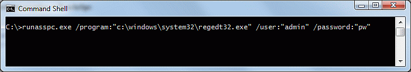
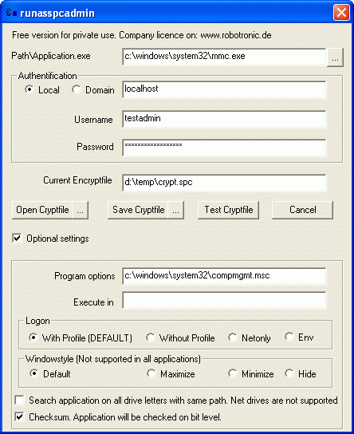
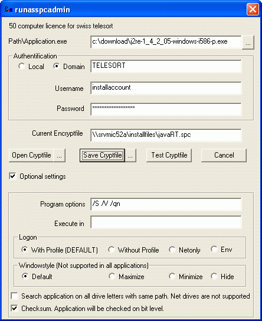

RunAsSpc Details und Beispiele
RunAsSpc Details und Beispiele
Übergebe ein Passwort oder verschlüsselte Anmeldedaten an Runas mit RunAsSpc
RunAsSpc kann einfach direkt wie in folgendem Beispiel ausgeführt werden.
RunAsSpc.exe /program:"c:\windows\system32\regedt32.exe" /user:"admin" /password:"pass"

Es wird keinerlei Sicherheitsprüfung durchgeführt und das Passwort liegt im Klartext vor.
Um die Anmeldekennung zu verstecken, können Sie eine verschlüsselte Datei generieren,
entweder mit RunAsSpc.exe über die Befehlzeile oder mit der grafischen Schnittstelle RunAsSpcAdmin.
Siehe unten >> Encryped files erstellen <<.
Sie können Sie dieses Cryptfile mit Runasspc wie folgt starten:
A) Wenn das Cryptfiles >> crypt.spc >> heißt., können Sie es mit einem Doppelklick auf RunAsSpc.exe im selben Verzeichnis starten.
B) Per Drag and Drop. Ziehen Sie das Cryptfile auf RunAsSpc.exe.
C) Über die Kommandozeile von RunAsSpc >> RunAsSpc.exe /cryptfile:"pfad\NameOfCryptfile.spc"<<
D) Erstellen einer Verknüpfung oder einen Link mit >> c:\runasspcEn\runasspc.exe /cryptfile:"pfad\NameOfCryptfile.spc" <<
E) Verknüpfen Sie die Dateiendung *.spc im System mit RunAsSpc.exe um das Cryptfile per Doppelcklick zu starten.
Sie können auch Ihre eigene Dateiendung für Crptfiles verwenden.
Encrypted files erstellen:
A)
Über die Befehlszeile mit RunAsSpc.exe
>> runasspc.exe /cryptfile:"crypt.spc" /program:"prog.exe" /domain:"localhost" /user:"admin" /password:"pass" <<
Sie finden Beispiele in der mitgelieferten Datei readme.txt oder starten sie >> runasspc.exe -h >> in der Befehlszeile für Hilfe.
B)
Mit der grafischen Oberfläche RunAsSpcAdmin.exe.
Folgen sie den Screenshots unten mit vielen Beispielkonfigurationen
oder sehen sie sich das Beispielvideo
an.
Starte Registry unter der lokalen Anmeldekennung localadmin.

Exceldokument molecularWheigtCalculation.xls unter dem Domainkonto departmentuser öffnen.

Die MSI Datei acdSee 4.0.msi installieren über das Domainkonto installaccount.

Um eine MSC Datei zu starten wie z.B.die Computerkonsole

Um ein VBScript zu starten.

Einen Registrierungseintrag setzen

Eine Batchdatei wie .cmd oder .bat zu starten

Java installieren mit den Parametern /S /V /qn

Eine Batchdatei mit den Parametern optionA optionB optionC starten

Umgebungsvariablen verwenden

Über rundll32 das Softwareinstallationsapplet aufrufen

Kontakt:
Für Verbesserungsvorschläge, Fragen, spezielle Anforderungen oder Anpassungen schreiben sie uns.
runas@robotronic.de
Lizenz:
Runasspc ist nur für den privaten Gebrauch frei nutzbar.
Für Unternehmen gibt es auf den Unternehmensnamen registrierte Versionen.
Bestellung RunasSpc >>>
Download RunasSpc >>>
Date: 2019-10-13
Datenschutz
Impressum